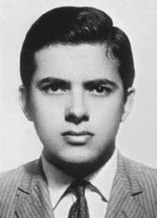

Miguel
Pereira
dos Santos
CIRCUNSTÂNCIAS DA MORTE
O relatório Arroyo narra que, próximo ao dia 20 de setembro de 1972, Miguel foi alvejado e morto, quando tentava encontrar com alguns de seus companheiros na mata. Conforme livro da CEMDP, essa data é confirmada por Regilena Carvalho Leão de Aquino, em depoimento prestado à Comissão de Inquérito de Desaparecidos Políticos na Câmara dos Vereadores.
Regilena afirma que a informação partiu do próprio general Bandeira, com quem teve contato durante sua prisão no Pelotão de Investigações Criminais da Polícia do Exército, em Brasília; e, que Miguel teria tido sua mão decepada para identificação das suas impressões digitais pelos órgãos de segurança. Já o Relatório das Operações da Manobra Araguaia, de 30 de outubro de 1972, informa que Miguel morreu em 26 de setembro 1972, cerca de 3 km da “casa do velho Manoel”, fruto de uma ação de emboscada da qual participaram um cabo e cinco soldados.
Outros documentos militares são mais vagos acerca do paradeiro de Miguel. O relatório da CEMDP registra que o guerrilheiro consta como “falecido” nos arquivos do DOPS/PR. E segundo o Dossiê Ditadura, o relatório do Ministério do Exército, enviado ao ministro da Justiça em 1993, indica apenas que ele teria desaparecido no ano de 1972.
The Arroyo report states that, on September 20, 1972, Miguel was shot and killed when he tried to meet some of his companions in the forest. According to the CEMDP book, this date is confirmed by Regilena Carvalho Leão de Aquino, in a statement given to the Commission of Inquiry into Political Disappearances at the Chamber of Councillors.
Regilena states that the information came from General Bandeira himself, with whom he had contact during his arrest at the Criminal Investigations Platoon of the Army Police, in Brasília; and, that Miguel would have had his hand cut off for identification of his fingerprints by security agencies. The Araguaia Maneuver Operations Report, dated October 30, 1972, states that Miguel died on September 26, 1972, approximately 3 km from “old Manoel's house”, as a result of an ambush in which a corporal and five soldiers participated.
Other military documents are more vague about Miguel's whereabouts. The CEMDP report records that the guerrilla is listed as “deceased” in the DOPS/PR files. And according to the Ditadura Dossier, the report from the Ministry of the Army, sent to the Minister of Justice in 1993, only indicates that he disappeared in 1972.
El informe Arroyo afirma que, el 20 de septiembre de 1972, Miguel fue asesinado a tiros cuando intentaba encontrarse con algunos de sus compañeros en el bosque. Según el libro del CEMDP, esta fecha fue confirmada por Regilena Carvalho Leão de Aquino, en declaración dada a la Comisión de Investigación de Desapariciones Políticas de la Cámara de Consejeros.
Regilena afirma que la información provino del propio general Bandeira, con quien tuvo contacto durante su detención en la Sección de Investigaciones Criminales de la Policía del Ejército, en Brasilia; y, que a Miguel le habrían cortado la mano para que los organismos de seguridad identificaran sus huellas dactilares. El Informe de Operaciones de Maniobra de Araguaia, de 30 de octubre de 1972, refiere que Miguel murió el 26 de septiembre de 1972, aproximadamente a 3 kilómetros de “la casa del viejo Manoel”, como consecuencia de una emboscada en la que participaron un cabo y cinco militares.
Otros documentos militares son más vagos sobre el paradero de Miguel. El informe del CEMDP registra que el guerrillero figura como “fallecido” en los expedientes del DOPS/PR. Y según el Dossier Ditadura, el informe del Ministerio del Ejército, enviado al Ministro de Justicia en 1993, sólo indica que desapareció en 1972.